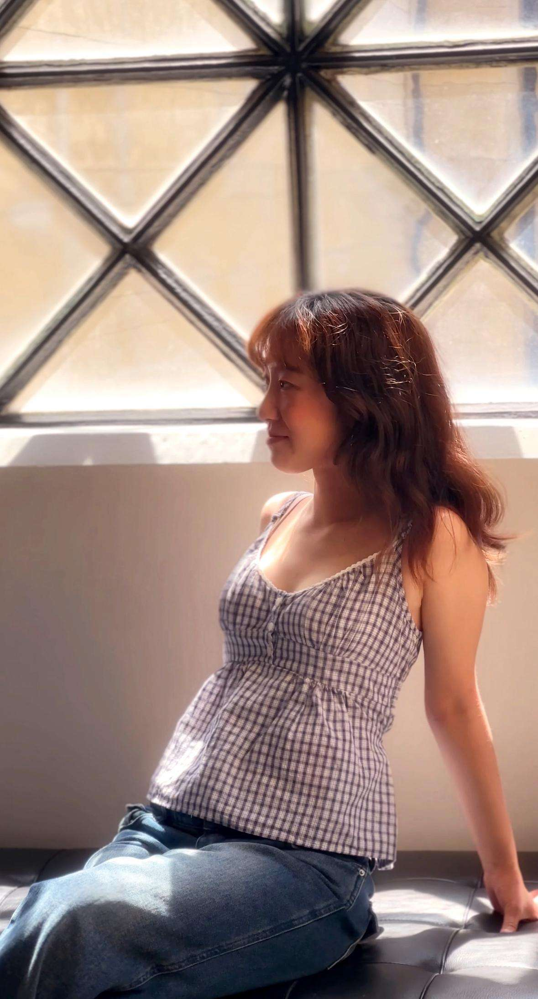

Ivy E. Lee
Welcome!
My name is Ivy E. Lee, and I'm currently a junior in high school based in Palo Alto, California. I've been passionate about art since middle school, but it was during those formative years that I began to truly commit to it, taking structured art classes to refine my skills and explore different styles. Over time, my dedication to art has grown into a defining part of who I am, and I am now preparing to take the next big step by applying to art schools and specialized art programs.
My artistic style is primarily influenced by digital fantasy realism—a genre that allows me to blend imaginative elements with a sense of visual authenticity. I'm drawn to vivid, bold colors as well as soft pastel palettes, and I enjoy experimenting with the balance between the two. My creative goal is to reside in that intriguing space where animation meets realism, crafting pieces that feel alive yet dreamlike, grounded yet fantastical. This intersection is where I feel most creatively fulfilled, and it's where I hope to continue growing as an artist.

Education
- Palo Alto High School, 50 Embarcadero Rd, Palo Alto, CA 94301 August 2022 - Present
- J.L.Stanford Middle School, 480 East Meadow, Palo Alto, CA 94306 August 2019 - June 2022
Accomplishments
Made art for the school newspaper Campanile since freshman year
I've contributed original artwork to The Campanile, my school's newspaper, since freshman year. I create visual content to accompany articles, enhance storytelling, and engage our student readership. Over time, I've taken on more complex assignments—from editorial illustrations and section headers to full-page graphics—and have helped shape the visual identity of the publication.
Through this experience, I've developed skills in digital illustration, layout design, and visual communication. I work closely with writers and editors to translate their ideas into imagery that supports and elevates their stories. This role has taught me how to balance creativity with deadlines, adapt my style to fit different tones, and collaborate as part of a fast-paced editorial team. It's also helped me grow more confident in my artistic voice and showed me how powerful visual storytelling can be in a journalistic context.
Awards
December 2020, Panther Pride
J.L.Stanford Middle School 480 E Meadow Dr, Palo Alto, CA 94306
September 2021, Panther Pride
J.L.Stanford Middle School 480 E Meadow Dr, Palo Alto, CA 94306
2022, President’s Education Awards Program
J.L.Stanford Middle School 480 E Meadow Dr, Palo Alto, CA 94306
Volunteer
Volunteer, Youth Connect, August 2022
Harmony Korean Church, 403 S Clovis Ave, Fresno, CA 93727
Leader & Counselor, Vacation Bible Study, August 2022
Harmony Korean Church, 403 S Clovis Ave, Fresno, CA 93727
Languages
Korean (Upper Intermediate B2)
Japanese (Upper Intermediate B2)
Sports
Ice Skating (2017-2022)
Clubs
Middle School
Anime Club
GSA Club
Elementary School
Girl Scouts for 2 years
Throughout elementary and middle school, I actively participated in a variety of clubs that reflected my interests and values. In elementary school, I was a member of the Girl Scouts for two years, where I developed teamwork skills, a sense of community responsibility, and a love for creative projects and outdoor activities. In middle school, I joined the Anime Club, which allowed me to connect with others who shared my passion for storytelling and animation, and I became involved in the GSA (Gender and Sexuality Alliance) Club, where I supported efforts to promote inclusivity and foster a safe, welcoming environment for all students. These experiences helped me grow socially and creatively while shaping my appreciation for community and self-expression.